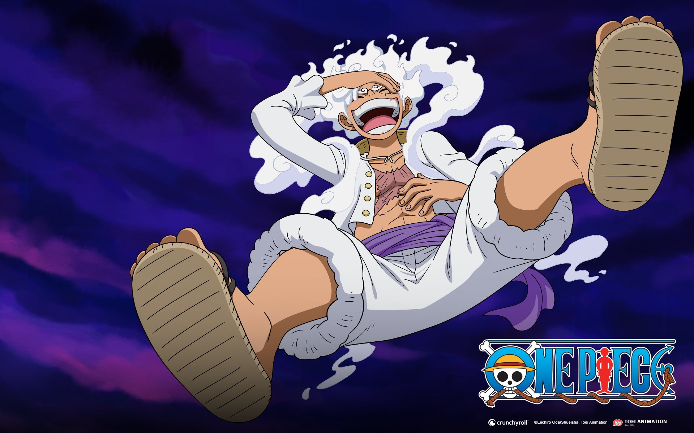
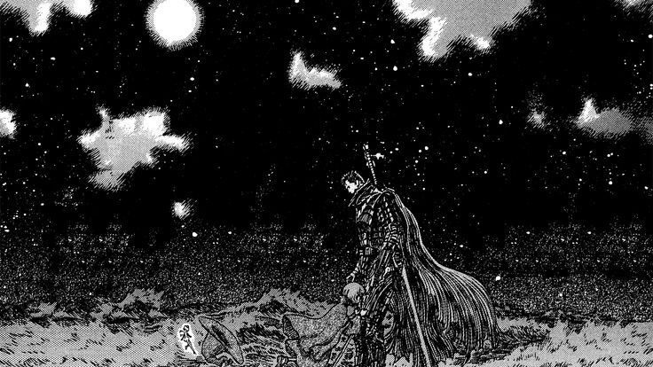

In a world obsessed with reality, they seek solace in the stylized realms of anime, where every storyline is a path to enlightenment and every character a guide to their ultimate truth.From the epic battles to the quiet moments of introspection, the anime cult finds divine meaning in every animation cell, worshipping at the altar of storytelling's finest creations.Our temples are living rooms lit by the glow of screens, our prayers are fervent fan theories, and our hymns are the opening themes of their beloved series. Welcome to my cult of anime, where every frame is a piece of sacred art.
Our Scriptures

One Piece
"One Piece" follows Monkey D. Luffy and his crew of pirates as they search for the legendary treasure, the One Piece, aiming to become the Pirate King in a vibrant, adventurous world.

Shingeki No Kyogin
"Shingeki No Kyogin" follows Eren Yeager and his friends as they fight against giant humanoid creatures known as Titans, uncovering dark truths about their world and humanity’s survival.

Kanshikan Tsunemori Akane
"Kanshikan Tsunemori Akane" is set in a dystopian future where society's mental states are monitored. Inspectors and Enforcers use this data to maintain order, tackling crime and ethical dilemmas in a surveillance-driven world.

Berserk
"Berserk" follows Guts, a lone mercenary with a tragic past, as he battles demonic forces and struggles with fate, friendship, and revenge in a dark, medieval fantasy world filled with brutality.
Our Core beliefs
If you are looking to explore or create a belief system inspired by anime, here are some concepts from anime that can influence core beliefs in a spiritual or philosophical sense:
### 1. **Balance of Light and Dark (Yin-Yang)**
Many anime series, like *Naruto*, *Bleach*, or *Fullmetal Alchemist*, emphasize the balance between opposing forces. You could form a core belief around harmony between positive and negative aspects of existence, like good and evil, creation and destruction, or life and death. This belief focuses on the idea that one cannot exist without the other, and true wisdom comes from understanding and balancing these forces.
### 2. **Power of Friendship and Unity**
A core theme in many anime, like *Dragon Ball*, *One Piece*, and *My Hero Academia*, is the power of friendship and unity. A belief system could focus on collective strength, emphasizing that individuals grow spiritually and emotionally through connections with others. This belief highlights how unity and teamwork allow people to overcome obstacles and achieve greatness together.
### 3. **Endless Potential and Growth**
Inspired by characters who continually push their limits, like in *Naruto*, *Attack on Titan*, and *One Punch Man*, your belief could center around the idea of self-improvement and growth. It would focus on unlocking one’s true potential through perseverance, hard work, and resilience, teaching that no limit is absolute.
### 4. **Reincarnation and Cycles**
In anime like *Angel Beats!* and *Sword Art Online*, there are themes of reincarnation or characters moving through cycles of life and death. A core belief based on this could be the concept of rebirth and the journey of the soul through multiple lives or dimensions. Each life is a step toward enlightenment, with lessons learned across lifetimes contributing to spiritual evolution.
### 5. **Fate vs. Free Will**
Anime like *Fate/Stay Night* and *Steins;Gate* deal with the tension between fate and the power to change one’s destiny. A core belief could explore the idea of balancing destiny with the power of choice. While certain events may be fated, personal decisions and determination can alter outcomes, emphasizing the importance of agency and the responsibility that comes with free will.
### 6. **Connection to Nature and the Universe**
Drawing inspiration from anime like *Princess Mononoke* or *Nausicaä of the Valley of the Wind*, a belief could revolve around living in harmony with nature and respecting the interconnectedness of all life. It emphasizes the sacredness of the environment, animals, and the universe itself, and promotes a lifestyle aligned with ecological balance and mindfulness.
### 7. **Inner Strength and Spiritual Energy (Ki/Chakra)**
Many anime series, such as *Dragon Ball Z* or *Naruto*, focus on inner energy—Ki, Chakra, or some other form of spiritual power. Your belief system might teach that each person has untapped spiritual energy, and through meditation, discipline, and focus, one can access this energy to better themselves and the world around them.
### 8. **Sacrifice for the Greater Good**
Anime like *Fullmetal Alchemist* and *Attack on Titan* explore the theme of sacrifice for the sake of others or for a greater cause. A core belief could highlight selflessness, the willingness to sacrifice personal gain for the benefit of others, and the idea that true fulfillment comes from serving something larger than oneself.
Would you like to dive deeper into any of these ideas, or combine elements to shape a more specific belief system?